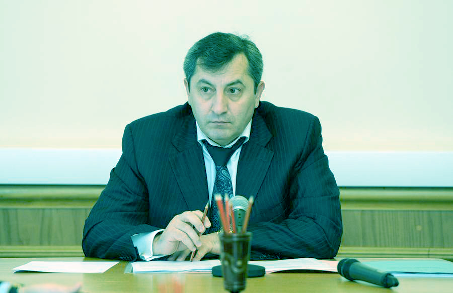
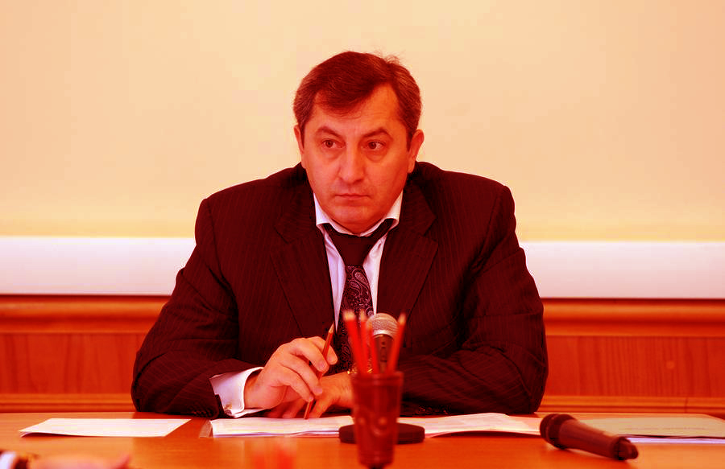

Правительство РД утвердило бюджет следующего года
- 
- 
В четверг, 31 октября, заместитель Председателя Правительства Республики Дагестан Абусупьян Хархаров провел совещание с учатием представителей Российского института информационных технологий во главе с конструктором Игорем Беловым.
Во встрече также приняли учатие руководители Министерства промышленности и энергетики РД, промышленных предприятий республики
На совещении были рассмотрены вопросы целесообразности внедрения производства на предприятии республики новейшей информационной техники, которая используется в отслеживании ситуации на дорогах пожаров в лесах, патрулировании груниц, поисково-спасательных операциях.
Как отметил вице-премьер, для организации широкого производства спц техники в Дагестане есть все необходимые рессурсы. По мнению Абусупьяна Хархарова рентабельность такого производства составит около 100 процентов.
По итогам совещания приняты соответствующие решения.
Пресс-служба Президента и Правительства РД
23 августа 2013 // 18:00опрос
все опросыВ какое время проведения праздника наиболее удачно?
Иван Громов
23 августа 2013 // 19:00На совещении были рассмотрены вопросы целесообразности внедрения производства на предприятии республики новейшей информационной техники, которая используется в отслеживании ситуации на дорогах пожаров в лесах, патрулировании груниц, поисково-спасательных операциях.
ОтветитьИван Громов
23 августа 2013 // 19:00На совещении были рассмотрены вопросы целесообразности внедрения производства на предприятии республики новейшей информационной техники, которая используется в отслеживании ситуации на дорогах пожаров в лесах, патрулировании груниц, поисково-спасательных операциях.
ОтветитьИван Громов
23 августа 2013 // 19:00На совещении были рассмотрены вопросы целесообразности внедрения производства на предприятии республики новейшей информационной техники, которая используется в отслеживании ситуации на дорогах пожаров в лесах, патрулировании груниц, поисково-спасательных операциях.
ОтветитьИван Громов
23 августа 2013 // 19:00На совещении были рассмотрены вопросы целесообразности внедрения производства на предприятии республики новейшей информационной техники, которая используется в отслеживании ситуации на дорогах пожаров в лесах, патрулировании груниц, поисково-спасательных операциях.
Ответить